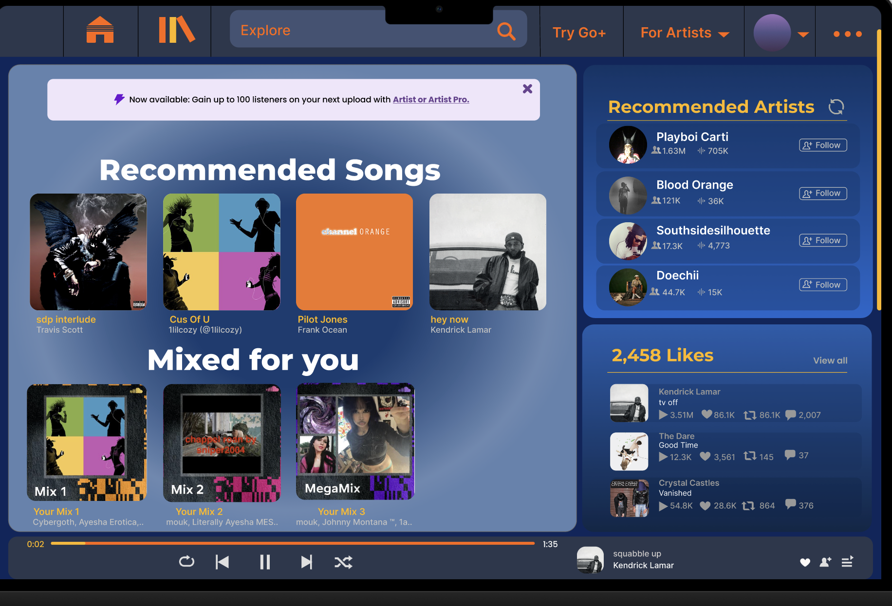

Doodlequest is an ongoing application that I conceptualized in the Fall of 2024. It will be my senior project and aims to create an interactive platform for aspiring artists to enhance their intellectual artistic ability and experience.

In cooperation with the Occidental College Biochemistry Department, my classmates and I worked to develop a streamlined database for biochemistry research. I was primarily responsible for the frontend development.

During the last year, I have taken an interest in UX design, and have worked on a few small projects using Figma. Check them out here!